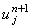
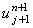
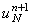

|
2.4. Определение решения на правой границе
Итак, используя левое граничное условие и
соотношения (4.13), можно определить
значения прогоночных коэффициентов на любом шаге по координате х.
Однако рекуррентное прогоночное соотношение (4.11) позволит рассчитать значение
функции u в точке , только если будет известно значение функции u
в точке , т.е. в соседней справа точке на разностной сетке. Следовательно, необходимо знать
значение функции u на (n + 1)-ом шаге по времени в крайней
справа точке, которое можно определить из правого граничного условия (4.7):
Однако вместо граничных условий 1-го рода (4.5) могут
быть заданы граничные условия 2-го или 3-го рода. Для расчёта решения на правой границе
в этом случае используют рекуррентное прогоночное соотношение (4.11), записанное
для j = N - 1:
Пусть задано правое граничное условие 2-го рода:
Запишем его аппроксимацию:
Подставляя соотношение (4.15) в данное равенство и выражая , получаем:
Пусть задано правое граничное условие 3-го рода:
Запишем его аппроксимацию:
Подставляя соотношение (4.15) в данное равенство и выражая , получаем:
|